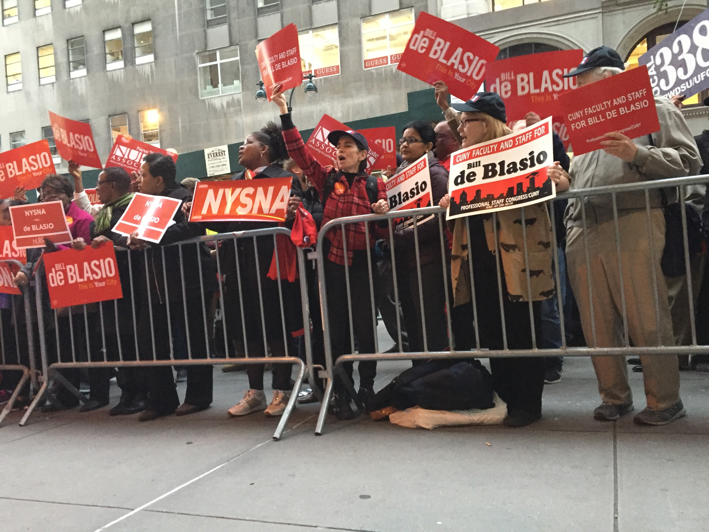

Terror prevention dominated the first 12 minutes of an hour-long mayoral debate on Wednesday night, one day after a terrorist attack left eight people dead in Lower Manhattan. The debate was moderated by CBS anchorman Maurice DuBois and broadcasted on CBS-2 from the CUNY Graduate Center.
DuBois said the mosque of the attacker, Sayfullo Saipov, used to be under New York Police Department surveillance. Democratic incumbent Bill De Blasio ended the surveillance program early in his administration.
De Blasio said the program “failed because it alienated our police from the very people we needed information from and it violated people’s rights.”
Republican Assemblywoman Nicole Malliotakis stressed giving police unequivocal support to uncover terror threats without “targeting any particular group or any particular type of religion.”
While De Blasio and Malliotakis avoided singling out any religion, Independent candidate Bo Dietl said an overemphasis on political corrected-ness was putting people at risk.
“Just look at this terrorist,” Dietl said. “What did he look like? Did he look like ‘the terrorist' if you looked at a dictionary—with that beard the way he had?”
On political corrected-ness, Burlington, New Jersey resident Chris Walde said he appreciated Dietl’s candor. Walde commutes to Manhattan about five days a week and hopes to move to the city with his family next year.
“In today’s politics, I know a lot of the younger crowd kind of like to see that,” Walde said of Dietl’s remarks. “Only because it’s different. They want to see somebody that’s not your traditional ‘salt and pepper hair, sit behind the desk and speak calmly.’”
However, an Oct. 5 Quinnipiac poll estimated De Blasio still has the majority of likely voters, with 61 percent. Malliotakis and Dietl trailed significantly, with 17 percent and 6 percent of likely voters, respectively.
The makeup of about 150 people carrying signs in barricaded sections outside CUNY Graduate Center ahead of debate reflected that poll. De Blasio supporters were crowded in their section, outnumbering the other campaigns as they chanted slogans in support of their candidate.
Amid the crowd, high schooler Maya Rubin, 17, said she had been working with other students and De Blasio campaign staffers to advocate lowering the voting age to 17.
“A lot of 17-year-old have jobs and pay income taxes without representation,” Rubin said. “We really think that the youth voice needs to be more present in politics.”
Cesar Fuentes, a Malliotakis supporter, said De Blasio had been in power for too long.
“It’s time for change,” Fuentes said. “I think she’s going to bring about change.”
Inside the studio, the atmosphere was much quieter.
“We’re looking forward to a non-boisterous debate,” DuBois told the audience before the broadcast. A CBS crewmember warned audience members they would be removed if they yelled or called out.
The audience stifled groans and laughter as De Blasio’s restraint was tested by Dietl and Malliotakis, who accused the mayor of pay-to-play with former donor Jona Rechnitz. De Blasio denied the allegations, calling Rechnitz a “liar.”
The election will take place next Tuesday, November 7.